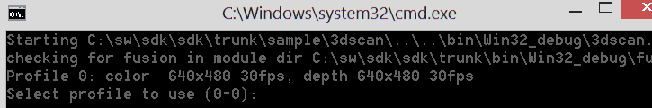
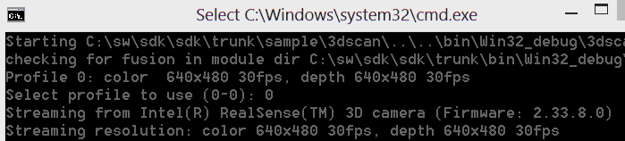
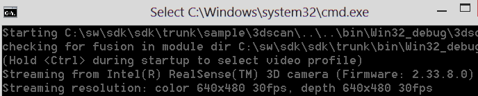
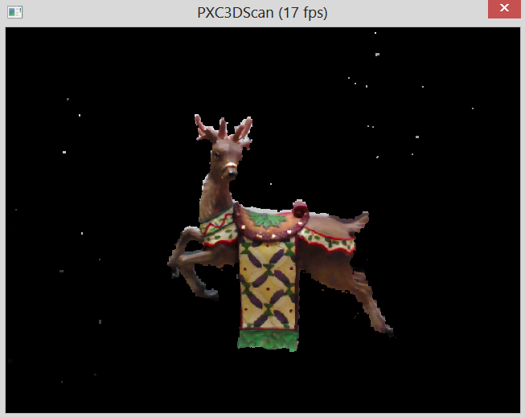
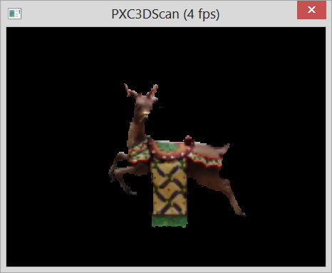

Sample: DF_3DScan |
Top Previous Next |
|
The DF_3DScan.exe sample is a minimal C++ console application that demonstrates the capabilities of the 3D capturing and scanning. This sample can be used to generate 3D mesh data. Launch & Build You can launch the prebuilt sample directly from the $(RSSDK_DIR)/bin/$(Platform) folder of the SDK installation, or compile and execute within Microsoft Visual Studio. The project and source files are located under $(RSSDK_DIR)/sample/DF_3DScan. Usage Attach the camera, and start the sample executable. During the sample startup sequence, optionally press and hold the Ctrl key to select a profile in the profile selection menu similar to what is shown in Figure 112. Currently, the module supports only a single profile.  Figure 112: 3dscan profile selection menu. Once the user selects the profile, the selected profile details are shown in stdout similar to what is shown in Figure 113.  Figure 113: 3dscan showing the selected profile. If the Ctrl key is not held during the startup sequence, the profile selection menu is not shown, and the first profile is used. In this case, you should see something similar to what is shown in Figure 114.  Figure 114: 3dscan starting with first profile. After the initialization is complete, the preview window is created. An example of the preview window is shown in Figure 115.  Figure 115: 3dscan preview window when Mode is set to TARGETING. The preview window shows the extent of the scanning volume. When the preview window is in focus, the user starts the scanning process by pressing the space bar to switching from the TARGETING to SCANNING mode. The sample is implemented to toggle between these modes using the space bar. The preview window will change to show the SCANNING preview similar to what is shown in Figure 116. The rendering style and size of the preview window will change to match the mode.  Figure 116: 3dscan preview when Mode is set to SCANNING. The preview window shows the accumulated data within the scanning volume. Generating a 3D Mesh data set from the scanning volume The scanning volume is converted into a mesh format when the window is closed. The mesh file (out.obj) is created in the current working directory. When debugging in Microsoft Visual Studio, this will be the location of the project file (i.e. sample\3dscan\). The OBJ output format is one of the supported standard mesh formats. These files can then be loaded into standard tools or importers for use. Limitations
|